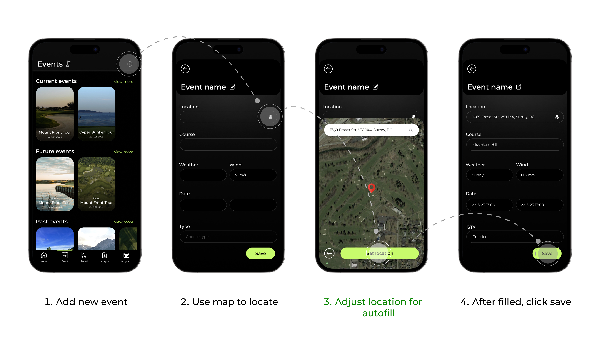
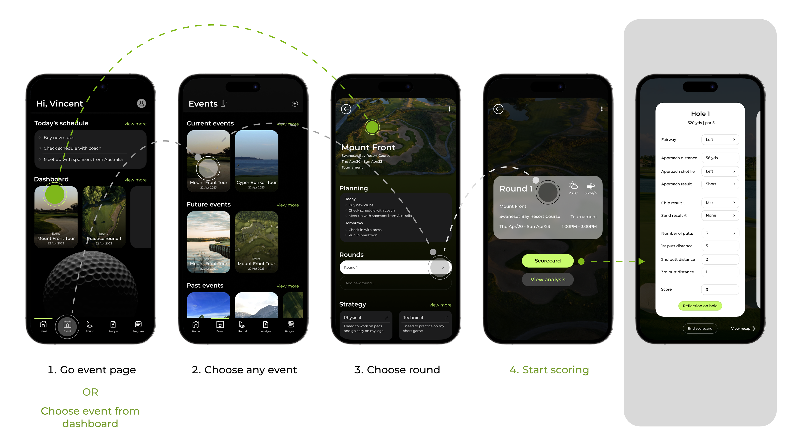
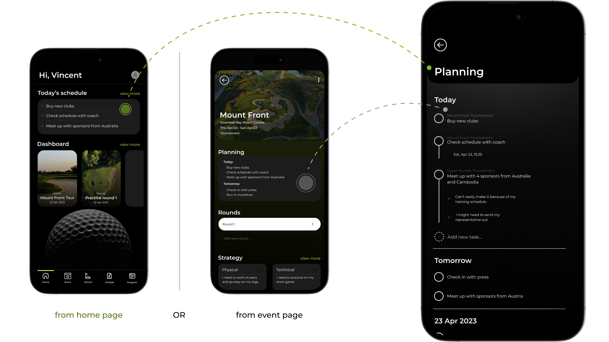

Established in 2020, One Iota Performance was founded by three individuals committed to empowering golf athletes to consistently enhance their performance. The founders' primary objective is to facilitate coaches and athletes in identifying optimal training areas and fostering improved communication through user-friendly tools and the tracking of vital golf-related data.
The goal of this project is to enhance the engagement, accessibility, and efficiency of One Iota's performance tracking and reflection functions for competitive golfers.
Golf score statistics measures a player's performance on the course, representing the number of strokes
needed to finish a round. It enables players to track their performance over time, pinpoint areas for
growth, and assess how they stack up against other players.
One Iota Performance tracking company currently offers website tracking platform which requires users to
input data more likely after the game ends. The research on golf community shows 0% golfers use website for
the purpose of scoring and analyzing data. It falls toward mobile app with more than 80% and the others
still use paper.
During the initial research, we conducted an interview with a golf player who pursued to play at tournament and walked him through the company website. We discovered that the users of client's website do not have enough time to fill statistics using their computer on the course. After playing 9 or 18 holes in a round, they will likely forget their play performance in detail for a single hole when the game ends.
– Raynard, 21, amateur competitive golfer
Survey Insights
Identified Problems
Goal
As the design lead, I crafted the redesigned One Iota Performance App, enriched with user-centric features. Balancing client expectations, budget considerations, and research insights, I curated a cost-effective solution that incorporates existing functionalities and successful industry practices. The revamped app is poised to empower golfers with seamless tracking, insightful reflection, and optimal performance enhancement tools.
Incorporating real-time GPS data into the One Iota Performance App is part of our strategy. Diverging from typical golf apps, our emphasis lies in data input rather than pre-planning, offering players both safety and adaptability. The app will also feature customizable mapping options for added flexibility.
Introducing a dashboard that acts as a central hub, offering users a concise summary and timely news updates immediately upon app access. The home screen is carefully designed to display essential elements in a prioritized and organized manner.
One Iota Performance empowers golfers to elevate their game through strategic planning. The app's planning feature enables users to seamlessly create and manage events, focusing on prioritized organization. Additionally, notification reminders guarantee timely schedule adherence.
